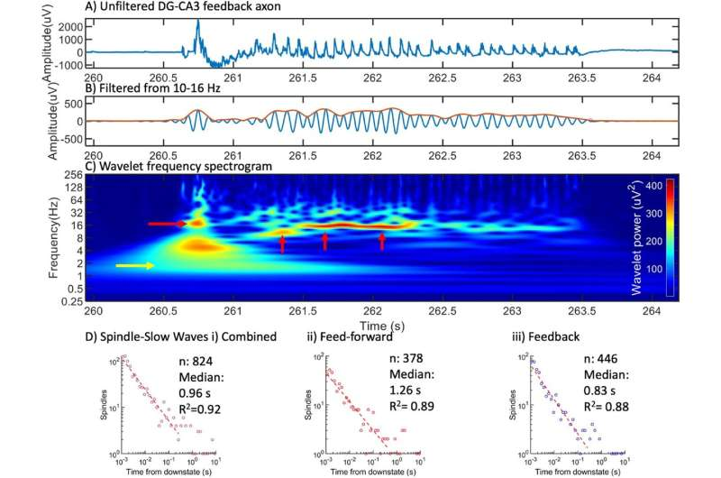

Araştırmacılar derin beyin dalgalarının yeni kökenini buldu
California Üniversitesi, Irvine biyomedikal mühendisliği araştırmacıları, derin uyku için çok önemli olan iki temel beyin dalgasının daha önce bilinmeyen bir kaynağını ortaya çıkardı: yavaş dalgalar ve uyku iğcikleri. Geleneksel olarak talamus ve korteksi birbirine bağlayan bir beyin devresinden kaynaklandığına inanılan ekibin Scientific Reports’ta yayınlanan bulguları, hipokampüsün hafıza merkezlerindeki aksonların bir rol oynadığını gösteriyor.

On yıllardır, yavaş dalgalar ve uyku iğcikleri, kafa derisi üzerindeki elektroensefalografi kayıtları yoluyla ölçülen derin uykunun temel unsurları olarak tanımlanmıştır. Ancak UC Irvine liderliğindeki ekip, hipokampüs içinde bu beyin dalgalarının yeni bir kaynağını ortaya çıkardı ve bunları tek aksonlarda ölçmeyi başardı.
Çalışma, yavaş dalgaların ve uyku iğciklerinin hipokampüsün cornu ammonis 3 bölgesindeki aksonlardan kaynaklanabileceğini gösteriyor. Voltajdaki bu salınımlar nöronal spiking aktivitesinden bağımsız olarak meydana geliyor ve bu beyin dalgalarının oluşumuyla ilgili mevcut teorilere meydan okuyor.
Şu anda Johns Hopkins Üniversitesi’nde yüksek lisans öğrencisi olan UC Irvine biyomedikal mühendisliği eski lisans öğrencisi baş yazar Mengke Wang, “Araştırmamız derin uyku beyin aktivitesinin daha önce bilinmeyen bir yönüne ışık tutuyor” dedi (Wang çalışmayı UC Irvine’deyken yürüttü). “Tipik olarak hafıza oluşumuyla ilişkilendirilen hipokampüsün yavaş dalgaların ve uyku iğciklerinin üretilmesinde çok önemli bir rol oynadığını keşfettik ve bu beyin dalgalarının nasıl uyandığına dair yeni bilgiler sunduk.
Ekip, izole hipokampal nöronlarda spontan iğ dalgalarını gözlemlemek için hipokampal alt bölgelerin in vitro rekonstrüksiyonları ve tek akson iletişimi için mikroakışkan tüneller de dahil olmak üzere yenilikçi teknikler kullandı. Bu bulgular, iğ salınımlarının daha önce düşünüldüğü gibi hacim iletimi yoluyla değil, aksonlar içindeki aktif iyon kanallarından kaynaklandığını göstermektedir.
Biyomedikal mühendisliği yardımcı profesörü Gregory Brewer, “Tek hipokampal aksonlarda iğ salınımlarının keşfi, uyku sırasında hafıza konsolidasyonunun altında yatan mekanizmaları anlamak için yeni yollar açıyor” dedi. “Bu bulguların uyku araştırmaları için önemli sonuçları var ve potansiyel olarak uyku ile ilgili bozuklukların tedavisinde yeni yaklaşımların önünü açıyor.”
Brewer’ın diğer araştırma bağlantıları arasında Hafıza Bozukluğu ve Nörolojik Bozukluklar Enstitüsü ile Öğrenme ve Hafıza Nörobiyolojisi Merkezi yer alıyor. Hipokampüsün yavaş dalgalar ve uyku iğcikleri üretmedeki rolünü ortaya çıkaran bu araştırma, derin uyku sırasında beynin aktivitesi ve bunun hafıza işleme üzerindeki etkisine dair anlayışımızı genişletiyor. Bulgular, uyku kalitesini ve bilişsel işlevi iyileştirmek için hipokampal aktiviteyi hedeflemenin terapötik potansiyelini araştıran gelecekteki çalışmalar için umut verici bir temel sunmaktadır.
Brewer ve Wang’a bu çalışmada biyomedikal mühendisliği emeritus profesörü William Tang, psikiyatri ve insan davranışları doçenti Bryce Mander ve biyomedikal mühendisliği yüksek lisans öğrencisi araştırmacı Samuel Lassers eşlik etti.
Kaynak: Mengke Wang et al, Spindle oscillations in communicating axons within a reconstituted hippocampal formation are strongest in CA3 without thalamus, Scientific Reports (2024). DOI: 10.1038/s41598-024-58002-0
Journal information: Scientific Reports